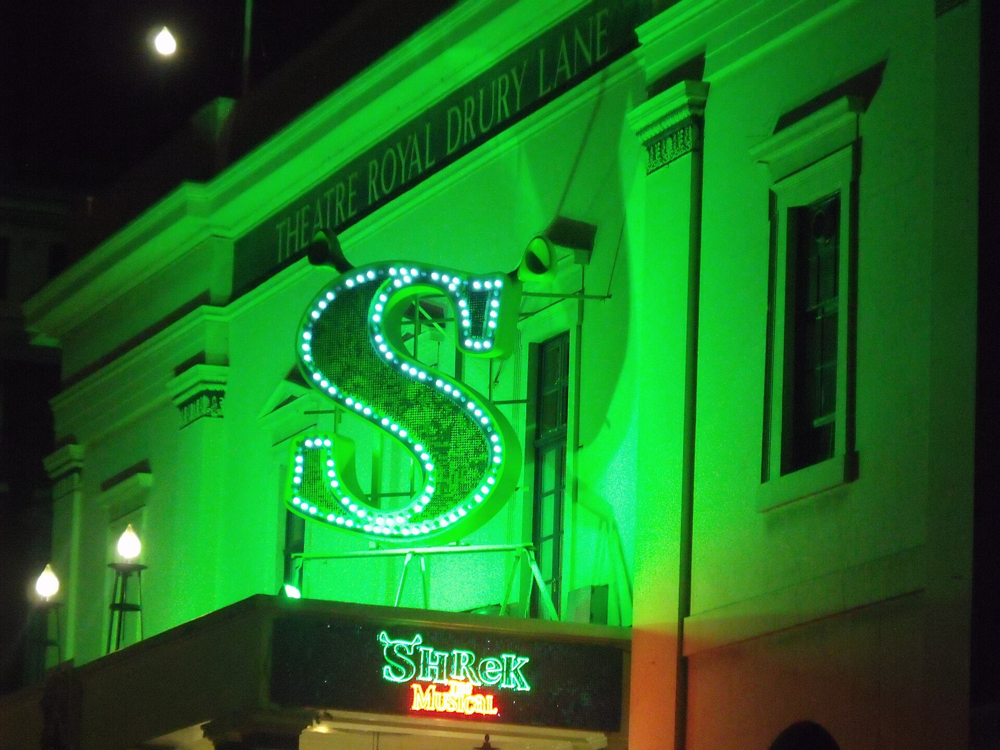

The Uzbek diaspora in the United Kingdom: a small but emerging community
The Uzbek community in the United Kingdom is a small, young diaspora based mainly in London. According to the 2021 UK Census, 3,810 people born in Uzbekistan were recorded in England and Wales. This article sets out the community's formation — from mid-20th-century Turkestani émigrés to the post-1991 stream of students, professionals and asylum seekers — on the basis of sources.

The Uzbek community in the United Kingdom is one of the smallest Uzbek diasporas in Western Europe and a relatively young one. It is based mainly in London and forms part of the wider Central Asian (Turkestani) community. According to the 2021 UK Census, 3,789 people born in Uzbekistan were recorded in England and 21 in Wales — 3,810 in England and Wales in total. (Source: ONS, 2021 Census, TS004 "Country of birth.") These figures count only people born in Uzbekistan; UK-born people of Uzbek descent are not included, so the overall size of the community is approximate.
The 20th century: Turkestani émigrés and political exiles
In the Soviet period there was effectively no mass migration from Uzbekistan to Britain, because there was no free migration for Soviet citizens. Even so, over the course of the 20th century a number of Turkestani (Central Asian) political émigrés and intellectuals were active in the West, including in London. When the East Turkestan Republic was proclaimed on 12 November 1933, its representatives sent emissaries to London and Delhi seeking support — showing that Britain was a historical point of contact for Central Asian political movements. (Source: open historical sources; "Central Asians in the United Kingdom," Wikipedia — secondary.) However, no permanent, cohesive Uzbek community formed in Britain in this period.
The post-1991 stream: independence and new migration
The core of the community began to form after Uzbekistan became independent in 1991. Independence opened borders and allowed Uzbekistanis to study, work and live abroad. Over the 2000s–2020s, Uzbeks who came to Britain settled mainly through three routes: student visas, skilled worker visas and the asylum system. Family migration was also part of this stream. Most new arrivals concentrated in and around London. (Source: ONS, 2021 Census; open migration data.)

Students and skilled professionals
One of the most visible routes to Britain for young Uzbekistanis is higher education. The UK government's Chevening scholarship programme has, since 1994, enabled Uzbekistani professionals to pursue a one-year master's degree at a UK university; since the programme began, more than 250 Uzbekistani scholars have studied at institutions such as Oxford, the London School of Economics (LSE) and University College London (UCL). (Source: Chevening / UK government information; UzDaily.) Beyond scholarships, many Uzbekistanis came to Britain at their own expense on student or skilled worker visas, and some remained in the country after their studies or work ended.
Asylum seekers and the 2005 Andijan events
Another part of the community consists of asylum seekers. After the Andijan events of May 2005, there was a general outflow of political émigrés and asylum seekers from Uzbekistan; part of this flow was directed to Western countries, including Britain. However, there is no precise, independently verified figure for the number of Uzbeks who came specifically to Britain in connection with Andijan — so only the general trend is noted here, without citing an exact number.
Community life in London
The centre of Uzbek community life is London. The Afghanistan and Central Asian Association (ACAA) was founded in London in 2001 by Nooralhaq Nasimi to help Afghan and Central Asian refugees and migrants. In recent years several Uzbek and Central Asian eateries have opened in the capital — including restaurants such as "Samarkand" in Dalston, "Uzbek Corner" in Streatham and "Grand Somsa" in Stratford, which serve national dishes such as plov, somsa, lagman and manti. An Uzbek diaspora association has periodically held an Uzbek culture and culinary festival. (Source: official pages of the relevant organisation and restaurants; open sources.)
Figures and comparison
The figure of 3,810 in the 2021 Census (England and Wales) shows how small the community is; Scotland's 2022 census recorded a further 47 people and Northern Ireland 21, giving roughly 3,900 Uzbekistan-born residents across the whole UK. (Source: ONS, 2021; Scotland's Census, 2022.) For comparison, the UN estimated 2,864 Uzbeks in Britain in 2015 — indicating that the community has grown over the decade. These figures are significantly smaller than the United States (about 98,000) or the large Uzbek communities in Russia and Turkey.
Conclusion
The Uzbek community in the United Kingdom is a small, young diaspora concentrated mainly in London, formed largely through post-1991 streams of students, professionals, asylum seekers and family migration. Because the community is lightly documented, its exact size and composition can only be estimated; the most reliable figures come, above all, from UK Census data. Its history is studied alongside the Uzbek diaspora in Canada [[ozbek-diasporasi-kanada]] and in Europe [[ozbek-diasporasi-germaniya-yevropa]].

Sources
- ONS — Census 2021, TS004 Country of birth (England and Wales)
- Census 2021 TS004 — Country of birth (Nomis official statistics)
- Central Asians in the United Kingdom — Wikipedia (secondary; census summary, UN 2015 estimate, ACAA)
- Afghanistan and Central Asian Association (ACAA)
- Chevening Scholarships — Uzbekistan (UK government)
- UzDaily — Chevening scholars from Uzbekistan at British universities
- Samarkand — Uzbek restaurant, Dalston, London
- Grand Somsa — Uzbek & Central Asian restaurant, Stratford, London